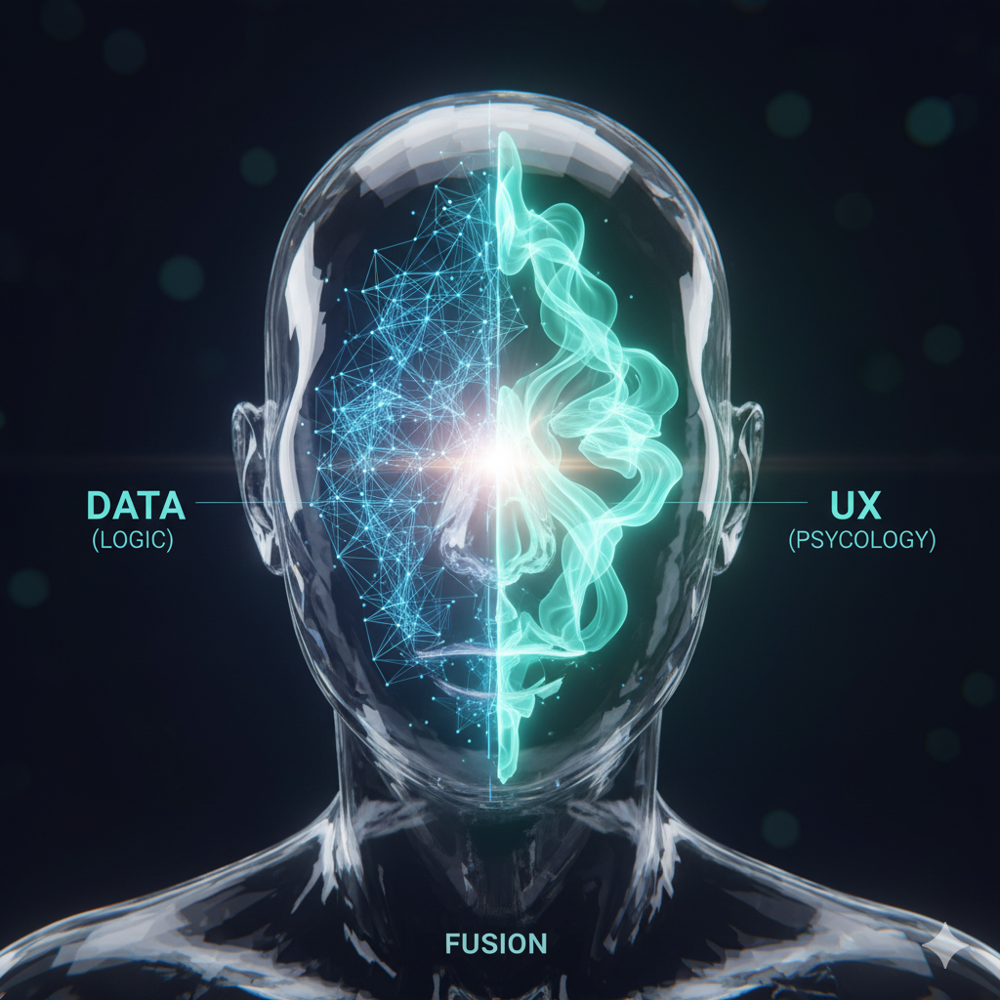

데이터 기반 UX 인사이트
전문가를 꿈꾸는 강한별입니다.
"망설이기보다 일단 도전하고 배운다." - 저의 핵심 가치입니다.
핵심 역량 요약 (My Core Identity)
사람의 생각을 변화시키는 광고/마케팅에 대한 관심으로 끊임없는 도전과 분석적 사고를 통해 성장의 기회를 창조합니다. 한국외대 Social Science & AI 융합학부에서 UX 심리 기반의 인간 이해와 데이터 해석 역량을 키우고 있습니다.
Timeline | 학습과 도전을 바탕으로 성장해온 여정
예술적 관심에서 시작해 데이터 분석가로 진화하는 저의 성장 경로를 담았습니다.
2025 ~ 현재
한국외국어대학교 Social Science & AI 융합학부 1학년 재직 중
KRBuddy 동아리 부원 활동 (1학년 1학기) 완료. 현재는 주력 동아리 활동 집중.
2024
전북여자고등학교 졸업 & 광고/마케팅 비전 구체화
광고 매체의 특성에 대한 관심 증대. 분석적 마케팅/데이터 사이언티스트로 목표 설정.
2022
전북여자고등학교 입학
문학적 관심 → 사회과학적 사고와 논리적 접근의 기반 형성.
2021
전주덕진중학교 졸업 & 미디어 관심 증대
미디어와 매체에 대한 관심이 깊어지며 장래희망: PD.
2019
전주덕진중학교 입학
창의적 사고와 협업 능력 배양 시기.
2013-2018
전주여울초등학교 졸업
창의적 사고의 기반: 유년기 장래희망은 화가.
Activities | 관찰, 실행, 그리고 인사이트 창출의 기록
사회 문제에 대한 관찰을 넘어, 분석적 실행력과 책임감을 통해 실질적인 변화를 만들어낸 경험들입니다.
리더십 및 기획 주도 경험
#TeamworkDriven #책임감
- 고2 학생회 기획재정부 부장: 재정 관리, 체육대회 행사 기획 및 진행.
- 고3 postschool 동아리 기장: 동아리 공모전 주도 및 실행.
- 고2 미국 모범청소년 해외연수 진행 (도전적 경험).
사회 문제 실천 및 공헌
#ChallengeSeeker #적극적
- 환경연합회 제작 및 운영: 부원 모집, 업사이클링 바자회 개최, 인식조사 및 환경 캠페인 진행.
- 지역 기반 프로젝트: 전주 지역도시 브랜드 활성화 방안 프로젝트 (실제 적용 탐구).
- 고3 수학 멘토멘티 활동 (멘토로 지식 기여).
- 봉사활동 다수 진행.
데이터 & 마케팅 분석 탐구
#AnalyticalThinking #InsightCreator
- 전주지역 마케팅 탐구: 지역 경제 활성화 정책 SWOT 분석, 도시 브랜드 탐구.
- 마케팅 진로 탐색: 마케팅 전략별 긍정적 반응 조사, 양극화에 따른 광고 흐름 예측 탐구, 스마트팜 기업 활동.
- 지역기반 프로젝트: 스마트 시티 리서치, 도시 브랜드 관련 탐구 진행.
- 학과특성화 프로그램 학생연구 진행 중.
Vision | 사람의 마음을 움직이는 인사이트를 만드는 순간을 향해
Ultimate Vision을 달성하기 위한 4가지 핵심 성장 축을 제시합니다.

✔ 학업·자격 비전
- 인간 심리 기반 서비스 디자인 능력 확보 (상담·UX심리 융합전공)
- 데이터 해석력 강화 (ADsP, SQLD 취득 목표)
- SPSS, R, Python 등 데이터 분석·시각화 역량 강화
✔ 경험 확장 비전
- 광고·브랜딩 연합동아리, 마케팅 공모전 참여
- UX/데이터 분석 관련 인턴 경험 확보
- Kaggle, 데이콘 등 데이터 분석 챌린지 참여
✔ 글로벌 역량 비전
- 3학년 교환학생 (스웨덴 희망) → 북유럽 UX 디자인 문화 탐방
- 글로벌 마케팅 사례 탐구 및 영어 논문 읽기 습관
- UX/HCI 해외 컨퍼런스 참여 목표
✔ 커리어 비전
- UX 리서치 기반 데이터 분석가
- 사용자 경험 중심 마케팅 기획자
- 심리적·데이터적 접근 모두로 문제를 해결하는 하이브리드형 기획자
Contact | 문의 및 협업 제안
데이터 분석, 마케팅 협업, 프로젝트 문의 등 언제든지 편하게 연락 주십시오.
직접 연락하기